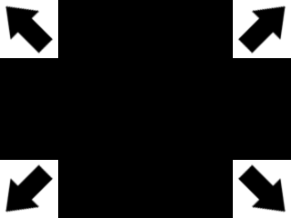

Clipping Textures

Last Updated 8/09/12
In the last tutorial we just mapped the entire texture. Here we're going to map portions of a texture to render images from a sprite sheet.From LFRect.h
#include "LOpenGL.h"
struct LFRect
{
GLfloat x;
GLfloat y;
GLfloat w;
GLfloat h;
};
In the new LFRect.h file, we define a rectangle data type. We'll use this to define the region in the sprite sheet we want to render.
The reason this is called a float rectangle is because you may at some point want an integer rectangle because of floating point errors.
The reason this is called a float rectangle is because you may at some point want an integer rectangle because of floating point errors.
Sample Code
float sum = 0.f;
for( int i = 0; i < 10; ++i )
{
sum += 0.1f;
}
if( sum == 1.f )
{
printf( "sum is equal to 1\n" );
}
else
{
printf( "sum is not equal to 1\n" );
}
You may be asking "What are floating point errors?". The float data type has limits to what numbers it can represent. Computers can't hold an infinite amount of data, so the a float
can only represent a limited amount of numbers.
For example, this sample code would actually output "sum is not equal to 1". The variable "sum" will actually equal 0.9999something. If you need consistent integer representation, you may need a integer rectangle.
For example, this sample code would actually output "sum is not equal to 1". The variable "sum" will actually equal 0.9999something. If you need consistent integer representation, you may need a integer rectangle.
From LTexture.h
void render( GLfloat x, GLfloat y, LFRect* clip = NULL );
/*
Pre Condition:
-A valid OpenGL context
-Active modelview matrix
Post Condition:
-Translates to given position and renders the texture area mapped to a quad
-If given texture clip is NULL, the full texture is rendered
Side Effects:
-Binds member texture ID
*/
In LTexture.h, we're going to make modifications to our render() function. It needs to take in a rectangle to define the texture area we want to render.
We also gave it a default argument of NULL, in case we want to render the full texture without defining the area.
We also gave it a default argument of NULL, in case we want to render the full texture without defining the area.
From LTexture.cpp
void LTexture::render( GLfloat x, GLfloat y, LFRect* clip )
{
//If the texture exists
if( mTextureID != 0 )
{
//Remove any previous transformations
glLoadIdentity();
//Texture coordinates
GLfloat texTop = 0.f;
GLfloat texBottom = 1.f;
GLfloat texLeft = 0.f;
GLfloat texRight = 1.f;
//Vertex coordinates
GLfloat quadWidth = mTextureWidth;
GLfloat quadHeight = mTextureHeight;
Near the top of our modified render() function, we set our default texture coordinates and quad width/height for our vertex coordinates.
Since we don't know if this function is going to be rendering the entire or part of the texture, we need variables to calculate the texture/vertex coordinates.
Since we don't know if this function is going to be rendering the entire or part of the texture, we need variables to calculate the texture/vertex coordinates.
From LTexture.cpp
//Handle clipping
if( clip != NULL )
{
//Texture coordinates
texLeft = clip->x / mTextureWidth;
texRight = ( clip->x + clip->w ) / mTextureWidth;
texTop = clip->y / mTextureHeight;
texBottom = ( clip->y + clip->h ) / mTextureHeight;
//Vertex coordinates
quadWidth = clip->w;
quadHeight = clip->h;
}
Now if the function gets a clip rectangle, we have to adjust our texture and vertex coordinates accordingly. Vertex coordinates are fairly easy, just get the width/height of the
clip rectangle.
The texture coordinates however are a bit trickier since they go from 0 to 1. Say we want to define the x position of the clip rectangle for the bottom right arrow:
Note: the position for the clip rextangle is the upper left corner
In pixel coordinates, the x position is 128 on a 256 pixel wide texture. 128/256 is 0.5. So to turn pixel coordinates into texture mapping coordinates, take the position and divide by the pixel width (or height for the vertical position).
The texture coordinates however are a bit trickier since they go from 0 to 1. Say we want to define the x position of the clip rectangle for the bottom right arrow:
Note: the position for the clip rextangle is the upper left corner
In pixel coordinates, the x position is 128 on a 256 pixel wide texture. 128/256 is 0.5. So to turn pixel coordinates into texture mapping coordinates, take the position and divide by the pixel width (or height for the vertical position).
From LTexture.cpp
//Move to rendering point
glTranslatef( x, y, 0.f );
//Set texture ID
glBindTexture( GL_TEXTURE_2D, mTextureID );
//Render textured quad
glBegin( GL_QUADS );
glTexCoord2f( texLeft, texTop ); glVertex2f( 0.f, 0.f );
glTexCoord2f( texRight, texTop ); glVertex2f( quadWidth, 0.f );
glTexCoord2f( texRight, texBottom ); glVertex2f( quadWidth, quadHeight );
glTexCoord2f( texLeft, texBottom ); glVertex2f( 0.f, quadHeight );
glEnd();
}
}
With our texture coordinates and our sprite dimensions calculated, we render our textured quad.
From LUtil.cpp
#include "LUtil.h"
#include <IL/il.h>
#include <IL/ilu.h>
#include "LTexture.h"
//Sprite texture
LTexture gArrowTexture;
//Sprite area
LFRect gArrowClips[ 4 ];
At the top of LUtil.cpp, we declare our sprite sheet and clip rectangles.
From LUtil.cpp
bool loadMedia()
{
//Set clip rectangles
gArrowClips[ 0 ].x = 0.f;
gArrowClips[ 0 ].y = 0.f;
gArrowClips[ 0 ].w = 128.f;
gArrowClips[ 0 ].h = 128.f;
gArrowClips[ 1 ].x = 128.f;
gArrowClips[ 1 ].y = 0.f;
gArrowClips[ 1 ].w = 128.f;
gArrowClips[ 1 ].h = 128.f;
gArrowClips[ 2 ].x = 0.f;
gArrowClips[ 2 ].y = 128.f;
gArrowClips[ 2 ].w = 128.f;
gArrowClips[ 2 ].h = 128.f;
gArrowClips[ 3 ].x = 128.f;
gArrowClips[ 3 ].y = 128.f;
gArrowClips[ 3 ].w = 128.f;
gArrowClips[ 3 ].h = 128.f;
//Load texture
if( !gArrowTexture.loadTextureFromFile( "07_clipping_textures/arrows.png" ) )
{
printf( "Unable to load arrow texture!\n" );
return false;
}
return true;
}
In our loadMedia() function, we define our clip rectangles and load our texture.
From LUtil.cpp
void render()
{
//Clear color buffer
glClear( GL_COLOR_BUFFER_BIT );
//Render arrows
gArrowTexture.render( 0.f, 0.f, &gArrowClips[ 0 ] );
gArrowTexture.render( SCREEN_WIDTH - gArrowClips[ 1 ].w, 0.f, &gArrowClips[ 1 ] );
gArrowTexture.render( 0.f, SCREEN_HEIGHT - gArrowClips[ 2 ].h, &gArrowClips[ 2 ] );
gArrowTexture.render( SCREEN_WIDTH - gArrowClips[ 3 ].w, SCREEN_HEIGHT - gArrowClips[ 3 ].h, &gArrowClips[ 3 ] );
//Update screen
glutSwapBuffers();
}
Finally in our render function, we render the individual arrow sprites on each corner of the screen.